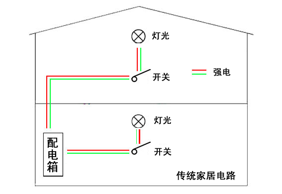
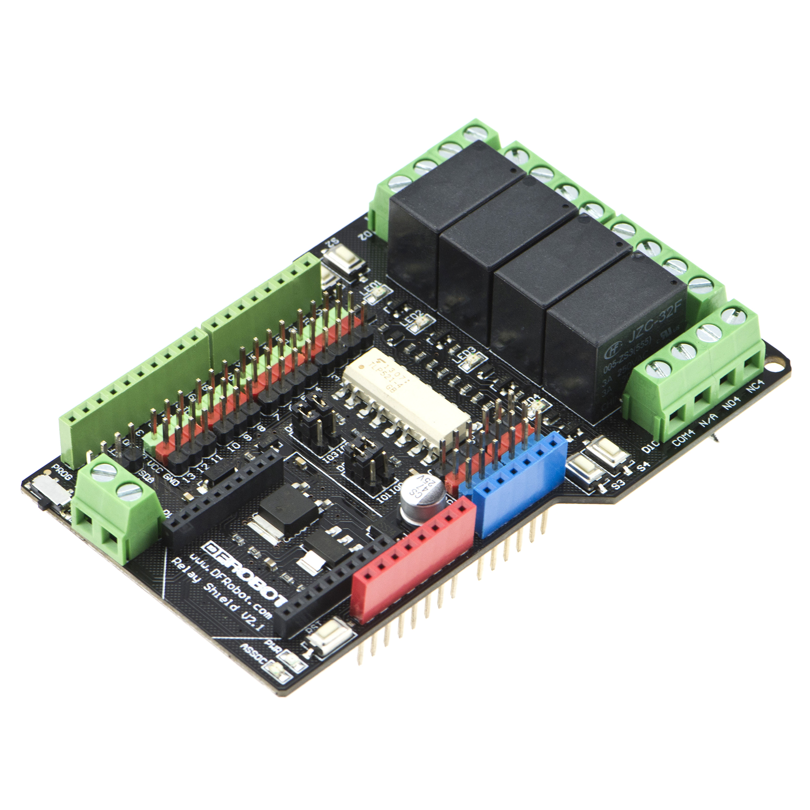
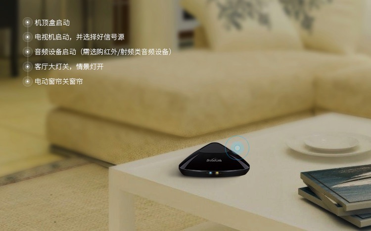

4. 虚谷号和智能家居¶
虚谷号能通过Arduino控制LED灯，但是能否控制如电灯、电风扇、电视机之类的220V家用电器？听起来有点不可思议，其实答案是肯定的。我们甚至可以用虚谷号控制家里的所有用电器，实现智能家居。
4.1. 传统家居和智能家居¶
智能家居是以住宅为平台，兼备建筑、网络通信、信息家电、设备自动化，集系统、结构、服务、管理为一体的高效、舒适、安全、便利、环保的居住环境。1984年，世界上第一幢智能建筑在美国出现后，加拿大、欧洲、澳大利亚和东南亚等经济比较发达的国家先后提出了各种智能家居的方案。现在，智能家居技术在美国、德国、新加坡、日本等国家都有广泛应用。
智能家居和传统家居的最大区别在于用电器的开关控制，由过去的人工手控，变成用电脑智能控制。传统家居电路如图所示，是通过直接控制开关的形式来控制灯光（家用电器）。
传统家居电路（以灯光为例）
而智能家居电路中，控制电脑和开关、灯光（家用电器）都连到配电箱，是通过电脑使用弱电（蓝线）控制开关的形式，以达到控制灯光（家用电器）的目的，如图所示。

智能家居电路示意图（以灯光为例）
4.2. 控制家电的几种方式¶
1.继电器控制
继电器（relay）是一种当输入量的变化达到规定要求时，在电气输出电路中使被控量发生预定变化的电控制器件。继电器通常应用于自动化的控制电路中，它实际上是用弱电控制强电的一种“自动开关”，在电路中起着自动调节、安全保护、转换电路等作用。为控制大电流电器，很多创客企业都设计了继电器模块。

DFRobot出品的数字继电器模块
购买链接：http://www.dfrobot.com.cn/goods-60.html
将数字继电器模块接上虚谷号的数字引脚（建议通过扩展板），拉高或者拉低电压，将会听到继电器连通和断开的“嗒嗒”声。继电器模块的接线如图示，一般来说，我们要把家用电器的插头线剪断，一头接到COM端，另一头接到NC端。如果你希望这电器的默认状态是连通的，那就接在NO端。
注意：接线时一定注意安全！
如果需要较多的继电器，可以选择这款为Arduino设计的继电器扩展板。
购买链接：http://www.dfrobot.com.cn/goods-177.html
2.红外遥控
如今市场上大部分家用电器，遥控器发出的红外编码信号频率是38kHz。因此，花十元多买一个数字红外信号发射模块，就能模拟遥控器，发射红外信号来控制家里的电器了。
IR Transmitter Module是一款Arduino兼容的38KHz红外线发射传感器，可发射标准38KHz的调制信号，通过对Arduino进行编程，即可实现对38KHzIR信号接收设备的指令操作。和Arduino、IR Receiver Module配合使用可实现红外无线通讯。

采用红外遥控形式控制家电，是目前最常见的智能家居实现手段之一。如BroadLink博联万能遥控器，实际上就是一个能连接Wi-Fi的红外遥控器。用虚谷号加IR Transmitter Module，就能实现。
3.网络控制
现在很多家电开始支持网络控制，其中用MQTT协议的居多。